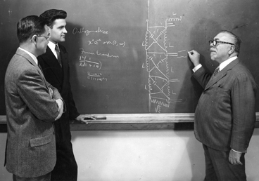
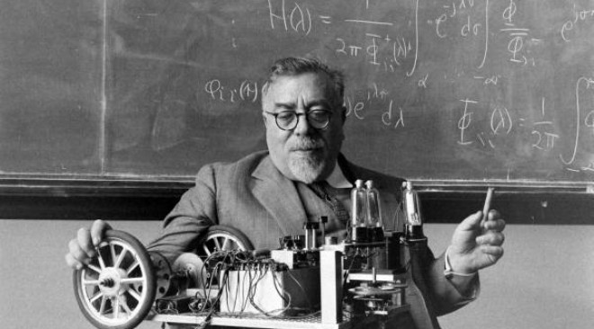
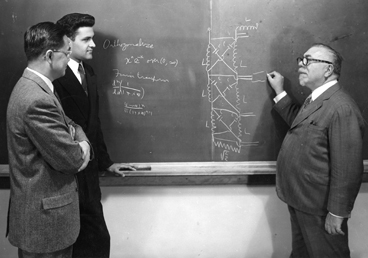
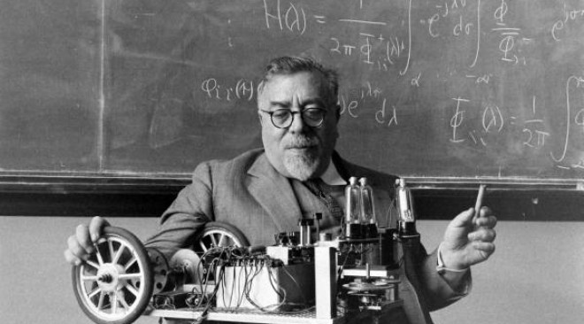
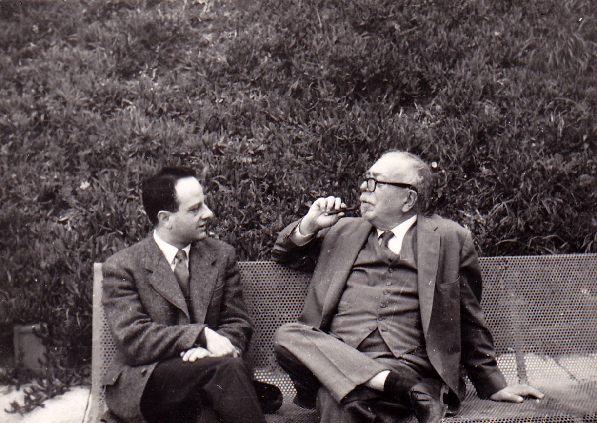
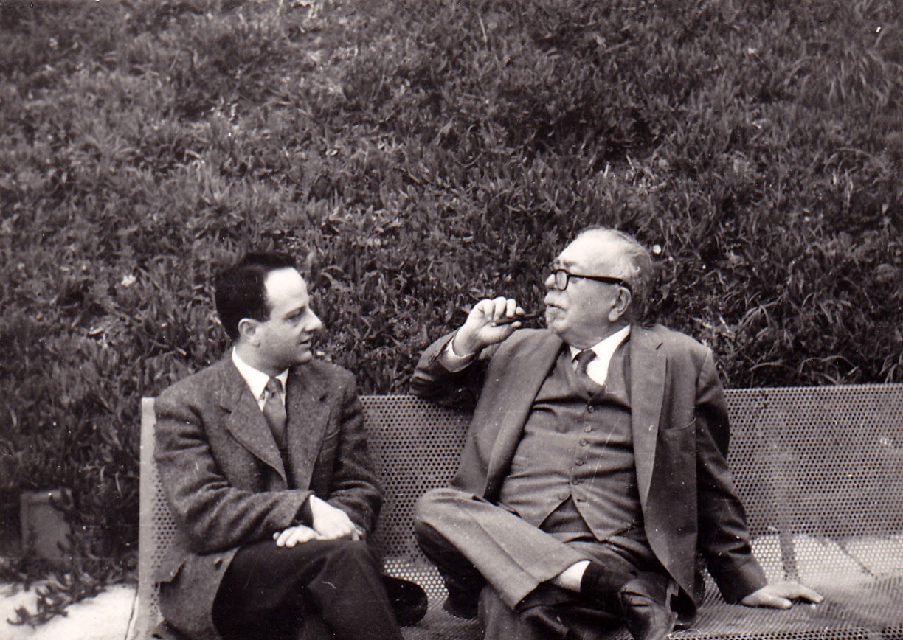

Who was Norbert Wiener?
Norbert Wiener (November 26, 1894 – March 18, 1964) was an American mathematician and philosopher. He was a professor of mathematics at MIT. A famous child prodigy, Wiener later became an early researcher in stochastic and mathematical noise processes, contributing work relevant to electronic engineering, electronic communication, and control systems. Wiener is considered the originator of cybernetics, a formalization of the notion of feedback, with implications for engineering, systems control, computer science, biology, neuroscience, philosophy, and the organization of society.
Some interesting facts about Norbert Weiner!
And some cool photos
 



 
